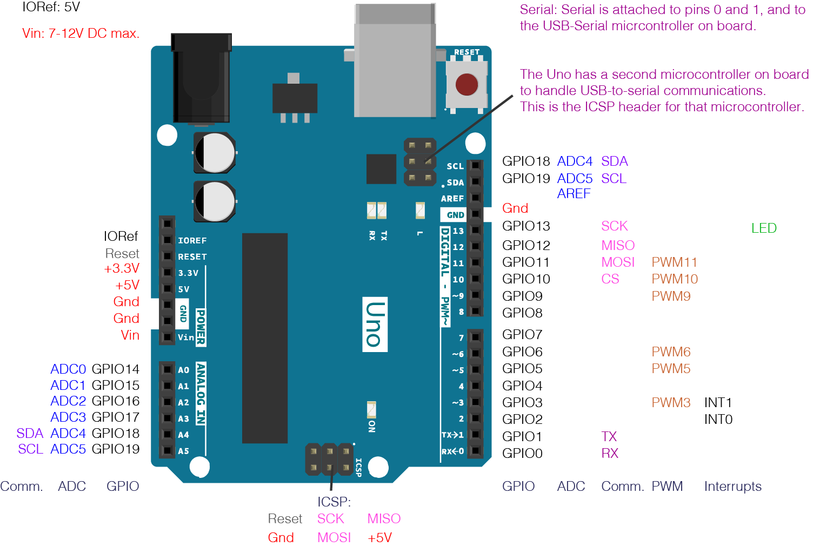
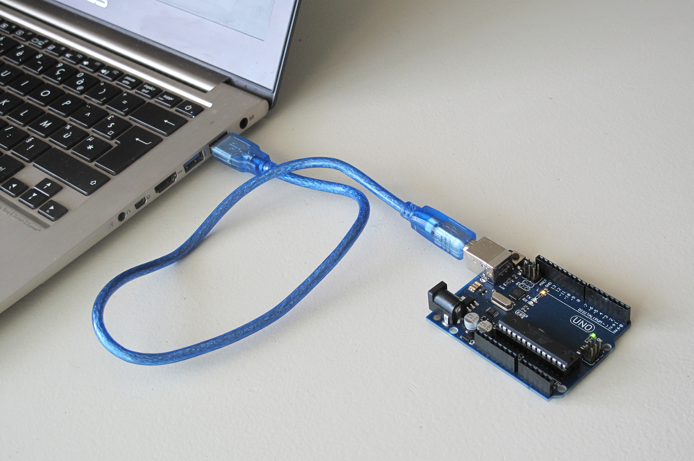
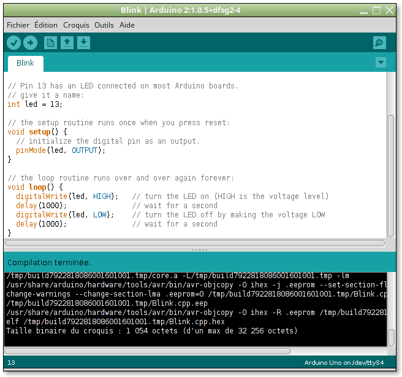

L’Arduino Uno est une petit carte contenant un micro-contrôleur assez petit et économique (~15€). Equipé d’un petit processeur AVR ATmega328P d’ATMEL, il a l’avantage d’utiliser une tension interne de 5V ce qui permet de le connecter facilement avec de nombreux capteurs et actionneurs (contre 3,3V ou 1,8V pour ARM et autres compatible x86).
Configuration matérielle
Bien sûr, à un tel prix, il ne faut pas s’attendre à trop de puissance :
- mono-processeur candencé à 20MHz (~20 MIPS) contre 1-2 GHz sur plusieurs coeurs dans vos PS et SmartPhone,
- 2 KO de RAM pour les données (contre 4-16 GO),
- 1 KO d’EEPROM pour les données persistentes,
- 32 KB de mémoire flash pour mettre le programme et les données constantes.
Cependant, cela devrait suffire pour notre robot. Par contre, il n’est pas vraiment question de faire du traitement d’image avec une caméra.
Connectivité
L’ATmega328P qui équipe la carte Arduino Uno est un micro-contrôleur, c’est-à-dire un micro-processeur partageant sa puce électronique avec de la mémoire et des pilotes de périphériques et dédié aux applications embarquées. Les périphériques sont habituellement des capteurs et des actionneurs, c’est-à-dire des mécanismes physiques procédant à la conversion d’une grandeur physique vers une grandeur électrique (la tension en général). Les pilotes de périphériques contiennent des circuits spécialisées pour traiter les signaux électriques et de la logique pour contrôler les échanges avec les capteurs et les actionneurs. Le contact entre pilote et périphérique se fait à travers une broche permettant de faire passer l'électricité entre 0 et 5V pour l’Arduino.
Le schéma ci-dessous donne une bonne vision des broches disponibles sur l’Arduino Uno.

Au premier coup d’oeil, à l’exception des broches en charge de l’alimentation et du reset, elles sont partagées entre plusieurs pilotes : GPIO, ADC, PWM, etc. Cela est du au fait que (a) développer un micro-contrôleur est très cher et (b) multiplier les broches sortant d’une puce pose des problèmes technologiques (et de coût à la construction de la carte). Par conséquent, les constructeurs maximisent l’utilisabilité des puces en essayant de minimiser le nombre de broches. Le résultat global est qu’il faut :
- bien réfléchir à la connexion des périphériques à la conception,
- configurer les broches aux démarrage pour sélectionner quel pilote les gèrera.
Pour information, les pilotes principaux fournis par l’ATmega328P sont ;
- GPIO (General Purpose Input Output) - signaux binaires (0 = 0V, 1 = 5V) en entrée et en sortie,
- ADC (Analog Digital Converter) - convertiseur analogique / numérique de tension entre 0 et 5V sur 10-bit (résultat entre 0 et 1023),
- PWM (Pulse Width Modulation) - génération d’un signal binaire avec des impulsions de différente largeur (codé sur 8-bit) permettant de contrôleur moteurs et servo-moteur,
- SDA, SDL - pilote I2C (Inter-Integrated Circuit) qui est un bus industriel permettant d'échanger des messages avec des capteurs et des actionneurs intelligents,
- MISO, MOSI, CS, SCLK - pilote SPI (Serial Peripheral Interface) et USART (Universal Serial Asynchronous Receiver-Transmitter) permettant de réaliser des liaisons série.
Utilisation
Un autre élément qui a permis l’acceptation très large de l’Arduino est sa simplicité d’utilisation. Il suffit :
- d’un PC équipé d’un port USB (Linux, Windows, Mac et même en ligne),
- d’un câble série
- de l’EDI (Environnement de Développement Arduino Arduino).

Le câble USB permet à la fois d’alimenter la carte Arduino, d'écrire le code de l’application dans la mémoire flash et de servir de port série (entrée / sortie) pour déboguer l’application.
L’EDI Arduino intègre toutes les activités de programmation d’un Arduino :
- écriture du code,
- compilation croisée du code pour l’AVR,
- téléchargement du code,
- gestion et affichage des entrées / sorties de débogage.
L'écriture d’un programme Arduino est également. Le langage utilisé est du C++ camouflé sous une forme de C fournissant les bibliothèques nécessaire au pilotage du matériel. Il y a essentiellement 2 fonctions à écrire :
setup()est appelée une seule fois au démarrage du programme pour configurer le matériel et l’application,loop()est appelée en boucle et en continu tout le long du fonctionnement du programme (un programme embarqué ne s’arrête jamais).
L’exemple ci-desous fait clignoter le LED câblée sur la carte Arduino (roche 13 pour le Uno) avec un délai d’1s entre chaque allumage et extinction :

On notera que l’Arduino dispose d’excellents tutoriels et exemples.